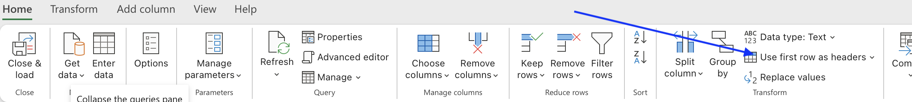
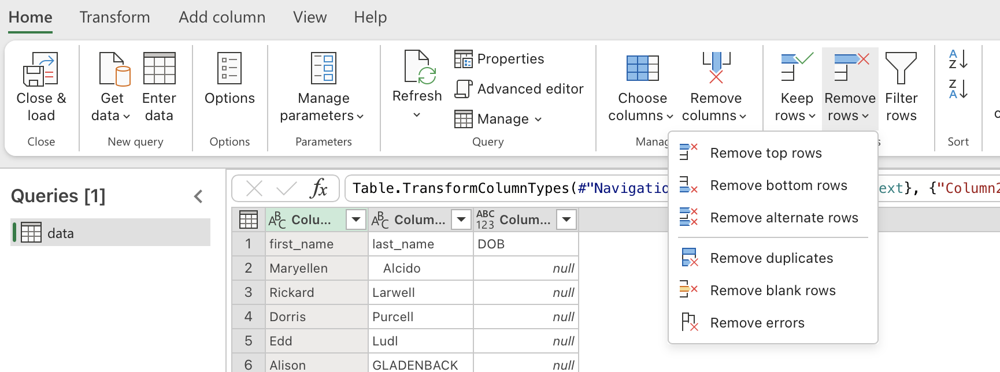

5. Power Query Transformations
Power Query allows us to clean and transform data to get ready for analysis. It allows us to apply transformations in steps, which can be repeated whenever new data arrives.
5.1 Why Steps Matter
Because every transformation is recorded:
- Work can be repeated
- Work can be reviewed
- Errors can be corrected
- Queries can be refreshed
This is one of Power Query's major advantages over manual Excel cleaning.
Click to show image

5.2 Setting a header row
Often data is exported with a header row that is not recognised by Power Query. We can manually set the header row to ensure that column names are meaningful. this is done by selecting the Use First Row as Headers option in the ribbon.
Click to show image

Activity
From the names.xlsx workbook that was loaded into Power Query from the previous module, set the first row as headers.
5.3 Removing Rows
One of the most common transformations.
5.3.1 Remove Blank Rows
Before
| Name |
|---|
| Sarah |
| David |
| Minh |
After
| Name |
|---|
| Sarah |
| David |
| Minh |
5.3.2 Remove Top Rows
Useful when reports contain:
- Titles
- Export information
- Notes
Example
1 2 | |
These rows can be removed before analysis.
5.3.3 Remove Bottom Rows
Useful when reports contain:
- Totals
- Notes
- Summary information
Example
1 2 | |
5.3.4 Removing Duplicates
Duplicates are common in imported data.
Before
| ResponseID |
|---|
| R001 |
| R001 |
| R002 |
After
| ResponseID |
|---|
| R001 |
| R002 |
Always review duplicates before removing them.
Click to show image

Activity
There are blank rows in the names.xlsx workbook that was opened in Power Query. Remove the blank rows, duplicates and any other rows that are not useful.
Tip
To check if duplicates or blanks exist before removing them choose the relevent option/s in the Keep Rows section of the ribbon. This will filter the data to show only the duplicates or blanks. You can then review the data before removing them.
5.4 Removing Columns
Many datasets contain unnecessary information.
Example
Before
| Name | Phone | Fax Number | Legacy ID |
|---|---|---|---|
After
| Name | Phone |
|---|---|
Removing unused columns:
- Simplifies analysis
- Improves performance
- Reduces clutter
Activity
Remove the unused column from the names.xlsx workbook that was opened in Power Query.
5.5 Right Click Menu
Clicking on a column header opens a menu with many useful options. Some of these are outlined below.
5.5.1 Renaming Columns
Column names should be meaningful.
Before
| Column1 | Column2 | Column3 |
|---|---|---|
After
| Name | Age | Suburb |
|---|---|---|
Good naming improves readability and maintainability.
5.5.2 Changing Data Types
Power Query automatically attempts to detect data types.
Common data types include:
- Text
- Whole Number
- Decimal Number
- Date
- Time
- True/False
Why Data Types Matter
Consider:
1 | |
If stored as text:
1 | |
calculations may fail.
Correct data types improve:
- Sorting
- Filtering
- Calculations
- Reporting
5.5.3 Replacing Values
One of the most useful transformations.
Example
Before
1 2 3 | |
After
1 2 3 | |
Survey Example
Before
1 2 3 | |
After
1 2 3 | |
Activity
Use the right click menu to replace the values in the names.xlsx workbook that was opened in Power Query. Rename columns appropriately and change data types where necessary. Standardise column data where appropriate.
5.6 Filtering Data
Filtering can remove irrelevant records.
Example
Keep only:
1 | |
records.
Or remove:
1 | |
records.
5.7 Sorting Data
Sorting helps identify:
- Missing values
- Duplicates
- Outliers
- Invalid values
Example
Sort Age:
1 2 3 4 5 | |
The unusual values become obvious.
5.8 Splitting Columns
Columns sometimes contain multiple values.
Example
Before
1 | |
After
| Suburb | State |
|---|---|
| Broadmeadows | VIC |
Power Query can split columns using:
- Delimiters
- Fixed widths
- Positions
Activity
Split up the location column in the names.xlsx workbook that was opened in Power Query.
5.9 Merging Columns
The opposite of splitting.
Before
| First Name | Last Name |
|---|---|
After
| Full Name |
|---|
Useful when creating display fields.
5.10 Creating New Columns
Power Query can generate new columns from existing data.
Example
Age:
1 | |
Create:
1 | |
Result:
1 | |
5.11 Understanding Query Refresh
One of the biggest advantages of Power Query is refreshability.
Example
Original file:
1 | |
Next month:
1 | |
Instead of repeating the entire process:
- Replace the source file
- Refresh query
Power Query reapplies all transformation steps.
5.12 Loading Results Back into Excel
Once transformations are complete:
5.12.1 Close & Load
Loads data into:
- Excel Worksheet
- Excel Table
5.12.2 Close & Load To
Allows loading into:
- Pivot Tables
- Data Model
- Existing worksheets